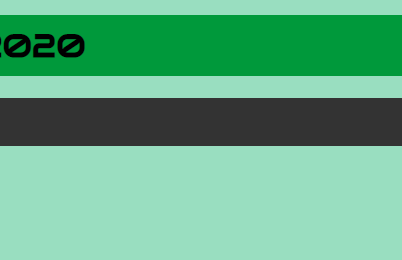

<!DOCTYPE html>
<html>
<head>
<link rel='icon' href='images/favicon.ico' type='image/x-icon'/ >
<link href="https://fonts.googleapis.com/css?family=Titillium+Web:300i&display=swap" rel="stylesheet">
<link href="https://fonts.googleapis.com/css?family=Josefin+Sans|Raleway&display=swap" rel="stylesheet">
<link href="style.css" rel="stylesheet">
<link href="https://fonts.googleapis.com/css?family=Courier+Prime&display=swap" rel="stylesheet">
<link href="https://fonts.googleapis.com/css?family=Audiowide|Bungee+Inline&display=swap" rel="stylesheet">
<script src="https://kit.fontawesome.com/517ae472b5.js" crossorigin="anonymous"></script>
<link href="https://fonts.googleapis.com/css2?family=VT323&display=swap" rel="stylesheet">
<title>Risk Taker | Nick's PLP</title>
<h1 class="txttitle">Nick's Personal Learning Plan 2020</h1>
<!-- TOPNAV (w3schools) -->
<script>
function myFunction() {
var x = document.getElementById("myTopnav");
if (x.className === "topnav") {
x.className += " responsive";
} else {
x.className = "topnav";
}
}
</script>
<div class="topnav" id="myTopnav">
<a href="index.html">Home</a>
<a href="change.html">Change Maker</a>
<a href="risk.html" class="active"><i class="fas fa-exclamation-triangle"></i> Risk Taker</a>
<a href="future.html">Future Self</a>
<a href="pdf.html">Files</a>
<a href="about.html">About</a>
<a href="javascript:void(0);" class="icon" onclick="myFunction()">
<i class="fas fa-bars"></i>
</a>
</div>
</head>
<body>
<h1><i class="fas fa-exclamation-triangle"></i> Risk Taker Goal</h1>
<p>For my Risk Taker goal, I have decided to make a website for a comic that I started when I was younger, Silly Stik.</p>
<hr>
<h2 id="plan"><i class="far fa-lightbulb"></i> PLAN</h2>
<p>At the start, I decided that ideally for the backend of the website, I would only have to add a file or two (the comic and data for the comic), and the website would add it automatically, as shown in this quick drawing.</p>
<img src="images/stiksite.png" width="50%">
<p>I feel like I should also mention that the site format will probably be loosely based off <a href="https://xkcd.com/" target="_blank">xkcd</a>'s website.</p>
<h3><i class="fas fa-clipboard-list"></i> Goal</h3>
<p><b>Criteria:</b> Have site online.</p>
<p><b>Completed:</b> Site put online...</p>
<hr>
<h2 id="progress"><i class="fas fa-tasks"></i> PROGRESS</h2>
<table style="width: 100%">
<tr>
<td>
<h3 class="prog">Mon 23/03</h3>
<p class="prog">Had idea to make website for Silly Stik, or at least have it as part of my PLP.</p>
</td>
</tr>
<tr>
<td>
<h3 class="prog">Sat 16/05</h3>
<p class="prog">I have been slowly updating the website since last update, have completed a lot of it. I am using PHP.</p>
</td>
</tr>
<tr>
<td>
<h3 class="prog">Wed 20/05</h3>
<p class="prog">Have been updating Stik Site, today switched from comic data being stored in .txt files to .csv files</p>
</td>
</tr>
<tr>
<td>
<h3 class="prog">Fri 5/06</h3>
<p class="prog">I scanned in and fixed up most pre-existing Silly Stik comics.</p>
<p class="prog">I also added all of the metadata for the comics in the .csv file</p>
</td>
</tr>
<!-- <div class="compl" title="Woo!"><p><i class="fas fa-medal"></i> Task Complete!</p></div> -->
</table>
<hr>
<h2 id="interaction"><i class="fas fa-user-friends"></i> PRIMARY INTERACTION</h2>
</body>
</html>